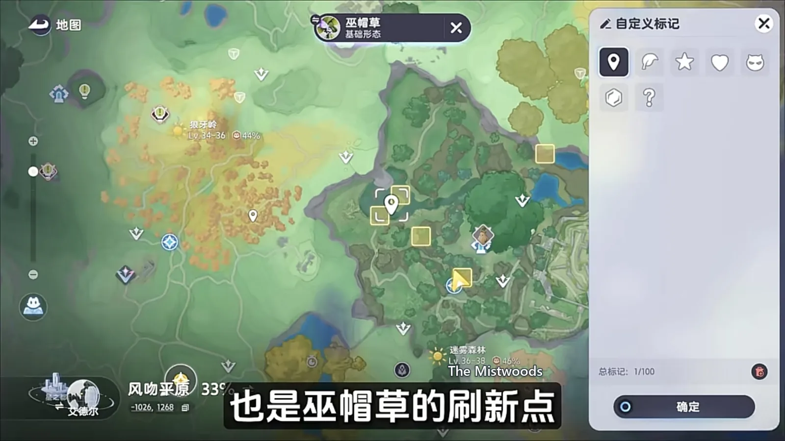
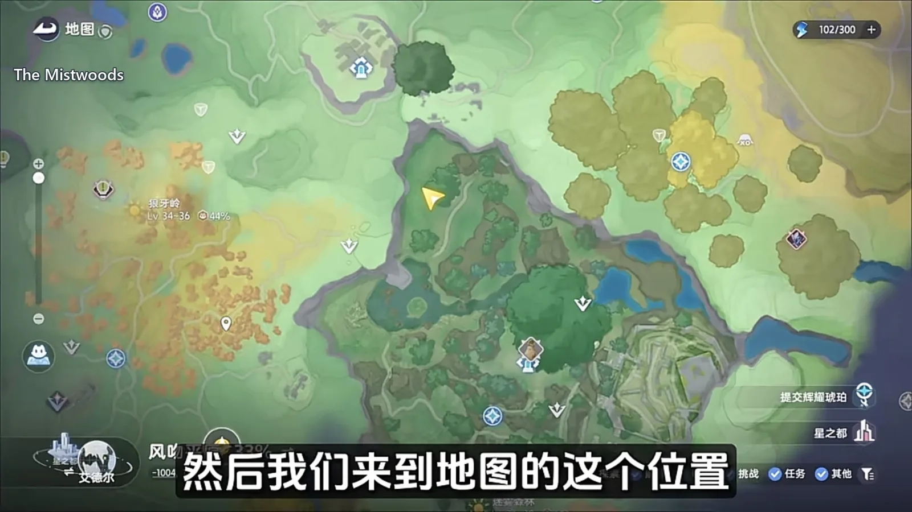
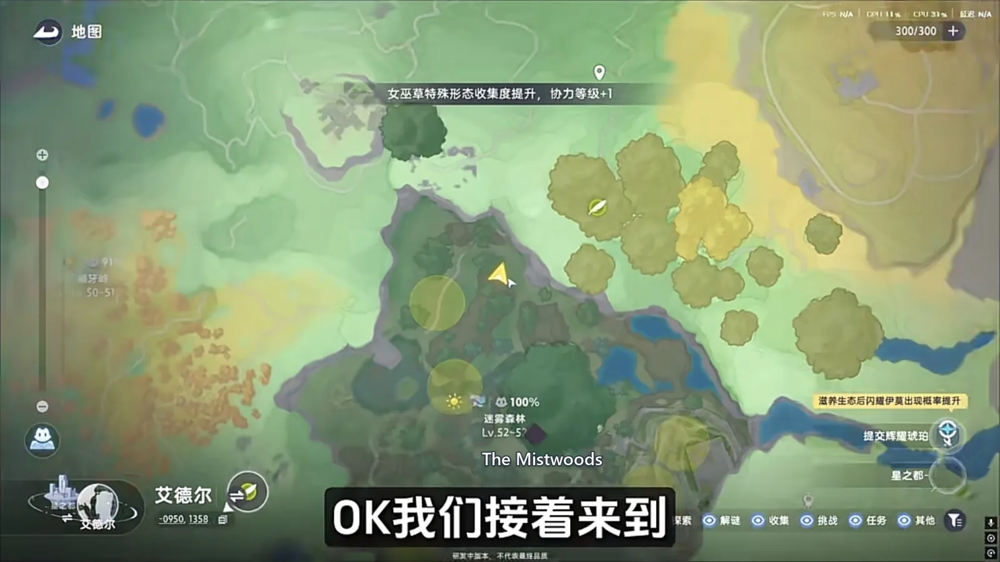
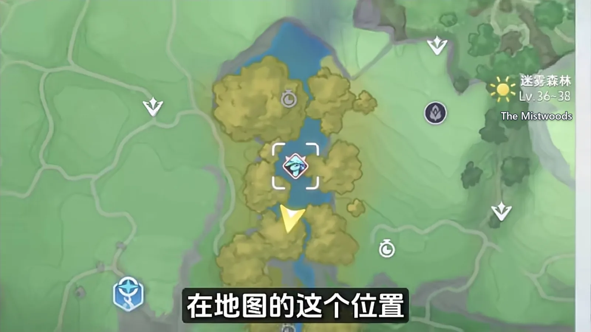
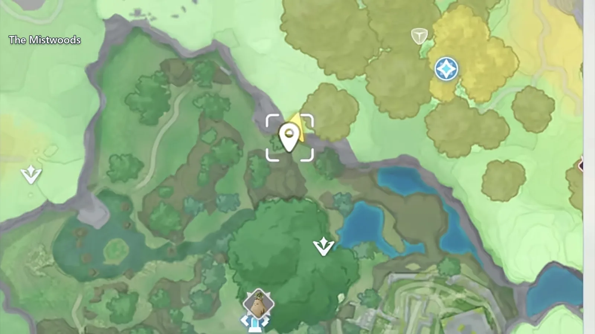

Home首页 / Guides攻略 / The Mistwoods: Every Spawn Point, Walked in One Lap《全地图、全形态伊莫收集》：迷雾森林
Checked核对于 October 16, 20262026 年 10 月 16 日
The Mistwoods: Every Spawn Point, Walked in One Lap《全地图、全形态伊莫收集》：迷雾森林
Two passes of The Mistwoods: the waypoint and the deep wood on either side of the night switch, the walk out for the moth, the pup and the fish, and one Omega that stays put once its quest is done.迷雾森林两批收完：传送点和林子分白天夜里各扫一遍，出森林顺着溪水收掉蝶、犬、鱼，最后是一只做完支线才肯常驻的 Omega。
The Mistwoods hands its Aniimo over in two batches: one in the deep wood, one around the outside of it. The route is a straight line. Land at the waypoint and take the two that are out in daylight, set the clock to night and go in for the Wisptis and the creature it evolves into, then clear the wood and walk out downhill, where the creek and the grassland keep a few more. Two points on the map are left at the end: the Alpha at the head of the creek, and a Tuckin that is not standing anywhere until its quest is done.迷雾森林能收的伊莫分两拨，一拨在林子深处，一拨在森林外围。路线其实很直：从传送点落地，先把白天的走调草和巫帽草收掉，再把时间切到夜晚进林子，抓幽爪镰和它的进化。森林内部收干净，就顺着一条小路往山下去，水边和草原上还有几只等着。最后回到地图上两个点，找莲冠龙和藏起来的埋埋。

At the waypoint: two that keep daylight hours传送点落地：走调草和巫帽草
Land at The Mistwoods waypoint and Hummin (Grass · Break) is spread over the ground at your feet — common enough that you catch one by walking into it. The waypoint also puts out a single Witchin (Dark · Grass · Regen) of its own, a short walk off.从迷雾森林的传送点落地，脚边就是成片的走调草（Hummin，草 · 击破），普通得顺手就能抓。传送点附近还会单独刷一只巫帽草（Witchin，暗 · 草 · 回能）。
If that one does not come out, walk down to the area marked on the map below — the same Witchin (Dark · Grass · Regen) spawns there as well.要是这一只没出来，就走到下面地图上标出的那片区域，那里一样是巫帽草（Witchin，暗 · 草 · 回能）的刷新点。

After dark: two Forest Forms, and what they evolve into入夜之后：幽幽焰、幽爪镰和它们的进化
Set the clock to night and Sparki (Fire · Regen) spawns all around here in its Forest Form. Catch fifteen Forest Form Sparki and a Forest Form Flamerion (Fire · Regen) turns up — the same rule this species follows on every other map.把时间切到夜晚，附近会刷出成片的森林形态幽幽焰（Sparki，火 · 回能）。抓满 15 只森林形态的幽幽焰，森林形态的幻焰灵（Flamerion，火 · 回能）就会出现 —— 这条规则在别的地图也一样。
Then move to the other point on the map, clock still on night, and this stretch is thick with Wisptis (Dark · Grass · DPS) in its Forest Form. The Ignitis (Dark · Grass · DPS) of that same form only shows up once you have beaten six Forest Form Wisptis with a Basic Form Ignitis.再换到地图上另一处，时间仍然留在夜晚，附近会刷很多森林形态幽爪镰（Wisptis，暗 · 草 · 输出）。森林形态的淬刃螳螂（Ignitis，暗 · 草 · 输出）得等你用基础形态的淬刃螳螂打赢 6 只森林幽爪镰，才会现身。
You do not have to do the damage with the Ignitis. Land the last hit with it and the kill counts.打这 6 只用不着全力输出，拿淬刃螳螂补最后一刀就行，击败就算数。
The Basic Form Ignitis you need for that is mostly to be found in Berylline Causeway.基础形态的淬刃螳螂主要分布在青石台区域。

The Prismana Form Witchin虹光形态的巫帽草
Go back to that stretch of wood and the Witchin there can turn up in its Prismana Form — but something has to be switched on first. Open the right weather, or a nature nurture, and a Prismana Form Witchin (Dark · Grass · Regen) will spawn here; on an ordinary day it cannot be found at all.回到那片林地，巫帽草会以虹光形态出现 —— 但得天气或者生态到位才行。赶上对应的天气，或者开了生态滋养，这只虹光形态的巫帽草才刷得出来，平时是碰不到的。

Out of the wood: a moth, a pup, and the fish in the creek出了森林：蝶、犬和溪里的鱼
Walk out of the wood from the waypoint, turn right, and Flutternym (Wind · Heal) is out in numbers. Follow the path down the hill and this stretch is where Emberpup (Fire · DPS) spawns. Where the path meets the road there is a creek, and the water holds Skippy (Water · Heal) and Pranky (Water · Heal).从传送点往森林外面走，右转，能看到成片的荧粉蝶（Flutternym，风 · 治疗）。顺着山路一路往下，这一带会刷小炭犬（Emberpup，火 · 输出）。走到马路边上有一条小溪，水里是莲顶鱼（Skippy，水 · 治疗）和顽皮鱼（Pranky，水 · 治疗）。
Follow the creek on and there is one very large tree; Iris (Grass · DPS) spawns near it in its Grassland Form.顺着溪水往前看，有一棵很大的树，树附近会刷草原形态的飘飘花（Iris，草 · 输出）。
The head of the creek: the Leafy Alpha溪尽头：莲冠龙 Alpha
Follow the creek all the way to its end and that is where the Leafy (Grass · Water · Regen) Alpha is. It is marked clearly on the map.沿着小溪一直走到尽头，就是 Alpha 莲冠龙（Leafy，草 · 水 · 回能），位置在地图上圈得很清楚。

The hidden one: the Omega Tuckin藏起来的那只：Omega 埋埋
The Mistwoods also keeps one Omega out of sight: Tuckin (Grass · Break). Finish the main story and get as far as Blackpine Road, and the side quest Binding Oath opens. Nothing in the quest itself is hard; the thing to watch is where the northern river runs, because that stretch of it is inside this cave. Finish the quest and Tuckin moves onto that point on the map for good.迷雾森林还藏着一只 Omega 埋埋（Tuckin，草 · 击破）。主线通关、走到黑松路之后，会触发支线 Binding Oath。这个任务本身不难，要注意的是北部漫河的位置，就在这个沙洞里面。任务做完，埋埋就会常驻在地图上那个点。

The order to walk it in为什么先收森林、再收外圈
The night Forms are what fix the order. Take the Hummin and the Witchin that keep daylight hours first, then set the clock and go into the wood — that is the fewest switches. The Prismana Form Witchin runs on weather, so take it if the weather is already there. The moth, the pup, the fish and the Iris around the outside are ordinary daytime spawns and cost nothing whatever time you go, and walking the creek out to its end is on the way to the Leafy. Tuckin is gated on quest progress rather than on the clock, so pick Binding Oath up as soon as the story puts you at Blackpine Road instead of coming back for it later.夜里的形态要等天黑，所以先把天亮时的走调草和巫帽草收掉，再切夜晚进林子最省事；虹光巫帽草看天气，赶上了就顺手带走；森林外圈的蝶、犬、鱼和飘飘花都是白天常规刷新，什么时候去都不亏，顺着小溪走到底正好撞上莲冠龙；埋埋卡的是支线进度，主线走到黑松路就顺手把 Binding Oath 接上，免得回头再跑一趟。